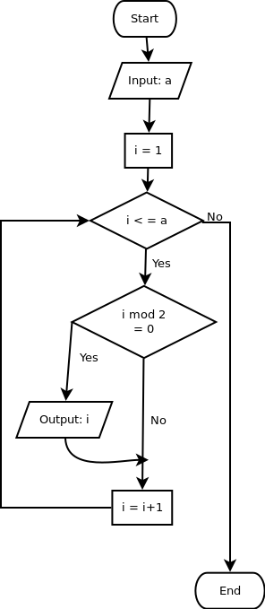

Yang Genap, Yang Genap...
Untuk dilakukan:
- Baca petunjuk yang ada
- Kunjungi website jdoodle, cobalah membuat program untuk menampilkan angka dari 1 sampai 100 yang habis dibagi lima atau habis dibagi tujuh
- Kunjungi website jdoodle, cobalah membuat program untuk menampilkan banyaknya angka dari 1 sampai 100 yang habis dibagi lima atau habis dibagi tujuh. Jika kesulitan, boleh menggunakan blok program
- Susunlah blok program sehingga sesuai dengan flowchart di bawah ini, kemudian tekan tombol evaluate

Masih sama seperti sebelumnya, kali ini kita hanya akan menampilkan bilangan genap saja. Bilangan genap, berarti bilangan yang habis dibagi dua. Tekan kategori Operations, dan amati blok Remainder of. Blok tersebut akan membantumu untuk mendapatkan sisa bagi antar dua angka. Jadi remainder of 64 : 10 adalah 4, karena 64 : 4 = 6, dengan sisa 4.